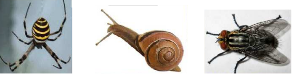
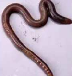
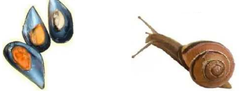

ANIMALES INVERTEBRADOS
Los animales invertebrados no tienen Los animales invertebrados no tienen columna verteb columna vertebral. Hay muchos tipos diferentes de invertebrados, unos viven en el agua, otros en el suelo, otros dentro de otros animales….unos son carnívoros, como las arañas, otros herbívoros, como los caracoles, otros omnívoros, como las moscas. Pero todos son ovíparos, se reproducen por huevos.

CLASES DE INVERTEBRADOS
ANELIDOS:
Son gusanos. Tienen el cuerpo dividido en partes. La lombriz, por ejemplo.

MOLUSCOS:
Tienen el cuerpo blando, y siempre está protegido por una concha. Casi todos viven en el agua, como e mejillón, pero algunos viven en la tierra, como mejillón, pero algunos viven en la tierra, como el caracol.

ARTROPODOS:
tienen el cuerpo duro. Las patas tienen el cuerpo duro. Las patas se pueden se pueden: doblar por muchos sitios.